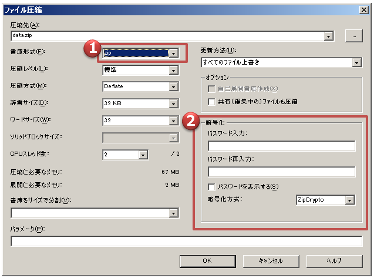

ZIPにパスワードを付ける方法
ZIPファイルにパスワードを付ける（暗号化する）には、圧縮時の画面で設定します。
具体的には、
1 7-Zipを起動し、暗号化したいファイルもしくはフォルダを7-Zipにドラッグ＆ドロップする
2 暗号化したいファイルもしくはフォルダを右クリックし、「7-Zip」メニューから「圧縮」を選択する
のどちらかを実行します。
↓↓↓↓↓↓↓↓↓
「ファイル圧縮」の画面が開いたら、まずは書庫形式を確認します。ZIPファイルの暗号化の場合は、ZIPが選択されているか確認してください。より高圧縮が可能な7z形式を選択することも可能です。
次に暗号化方式を確認します。7-Zipでは2種類の方式が利用できます。
ZipCrypt：昔からある一般的な方式。弱い
AES-256：比較的新しい方式。強い
とくに暗号化強度が要求されず、さまざまなところに配布する可能性がある場合は、ZipCryptを選択しておくのが無難です。多くの環境でそのまま開くことができるのが利点です。一方でパスワードクラックツールなどによって破られやすいのが難点です。
重要なファイルをやり取りする場合は、AES-256がお勧めです。ただし、解凍する側にもAES-256に対応したツールが必要になります。Vista以前のWindows標準のZIP解凍機能や古いツールではAESに対応できていません。
暗号化形式を決定したら、パスワードを2度入力します。以上で下側のOKボタンを押せば、パスワード付き（暗号化された）圧縮ファイルが作成されます。
ZIPファイルの暗号化ではファイル名は暗号化されない
ZIPファイルの暗号化では、ファイル名が隠せない問題があります。これはZIPファイルの仕様なので、どのようなツールを使っても回避は不可能です。パスワードを付けて圧縮した暗号化ファイルでは、暗号化されるのはファイルの中身だけです。その中にどのようなファイル名のファイルがあるかは誰でもわかってしまいます。
ですので、ZIPファイルの暗号化を行う際は、ファイル名に重要な情報が入らないように留意しておく必要があります。
ファイル名も含めて暗号化したい場合は、ファイル名も暗号化可能な7z形式のファイルとして暗号化します。
OSDN Project